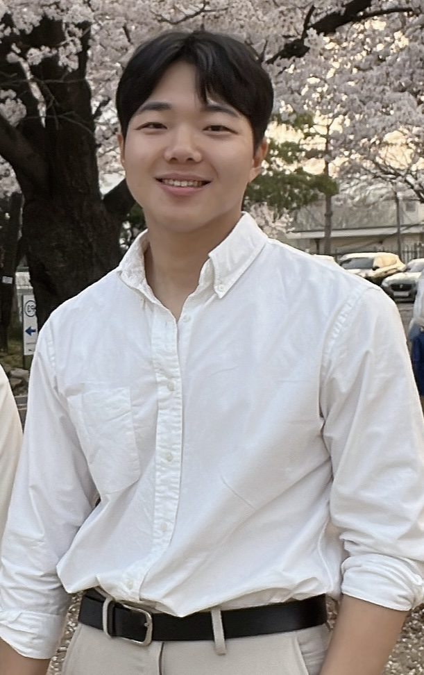
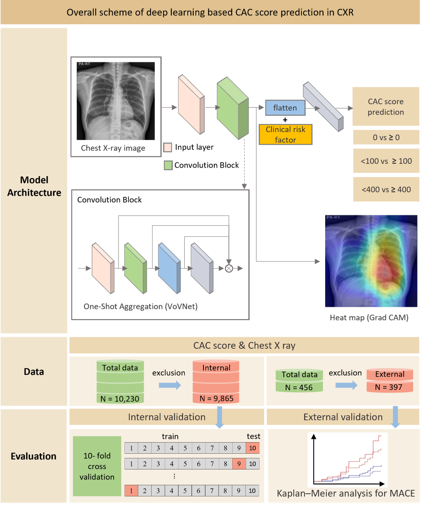

Hyunseok Jeong
Ph.D. candidate
Dept. of Medical Science
Yonsei University College of Medicine
Seoul
Email: hyunseok20@yonsei.ac.kr

Bio
- I have completed all doctoral coursework and am expected to graduate with a Ph.D. in August 2025.
-
Ph.D in Medical Science, Yonsei Universitiy, College of Medicine. (Full-funded scholarship)
Thesis Title : Deep learning-based real-time image quality assessment and guidance techniques for echocardiography standard view acquisition.
Advisor : Hyuk-jae Chang, MD
-
B.S in Physics, Yonsei University.
Jan 2014 - Jan 2020 Bachelor (2017-2018 : Military Service: Republic of Korea Army)
News
Research Experience
Award
- Selected for Outstanding Research Presentation, Yonsei University College of Medicine, 2025
Selected Publications [Google Scholar]
|  | Predicting categories of coronary artery calcium scores from chest X-ray images using deep learning. Youngtaek Hong† · Hyunseok Jeong† · Younggul Jang · Ran Heo · Seung-Ah Lee · Yeonyee E Yoon · Jina Lee · Hyung-Bok Park · Hyuk-Jae Chang Journal of Cardiovascular Computed Tomography, 2025 [paper]
|
| Artificial intelligence-enhanced comprehensive assessment of the aortic valve stenosis continuum in echocardiography. Jiesuck Park · Jiyeon Kim · Jaeik Jeon · Yeonyee E Yoon · Yeonggul Jang · Hyunseok Jeong · Youngtaek Hong · Seung-Ah Lee · Hong-Mi Choi · In-Chang Hwang · Goo-Yeong Cho · Hyuk-Jae Chang EBioMedicine, 2025 [paper]
|
|
| Fully Convolutional Hybrid Fusion Network with Heterogeneous Representations for Identification of S1 and S2 from Phonocardiogram. Yeongul Jang · Juyeong Jung · Youngtaek Hong · Jina Lee · Hyunseok Jeong · Hackjoon Shim · Hyuk-Jae Chang IEEE Journal of Biomedical and Health Informatics, 2024 [paper]
|
|

|
Identifying Coronary Artery Calcification Using Chest X-ray Radiographs and Machine Learning: The Role of the Radiomics Score. Hyunseok Jeong† · Hyung-Bok Park† · Jongsoo Hong · Jina Lee · Seongmin Ha · Ran Heo · Juyeong Jung · Youngtaek Hong · Hyuk-Jae Chang Journal of Thoracic Imaging, 2024 [paper]
|
Projects/Grant
| Scan Guide Software System (2023 ~ Current) This project aims to improve the accessibility and consistency of echocardiographic image acquisition by developing a deep learning-based solution for real-time image quality assessment and probe motion guidance enabling novice operators to obtain standardized cardiac ultrasound images with reduced inter-operator variability. *The system is currently undergoing commercialization. My role is to manage practical operations of the project and lead software development for echocardiography Scan guide system. The related paper is currently under preparation. [No. 1711193098] Development of flexible mobile healthcare software platform using 5G MEC The Ministry of Science and ICT |
|
| AI-Gatekeeper Solution : Chest X-Ray module (2022~2024) This project aims to predict Coronary Artery Calcium Score (CACS) from chest X-rays enabling early severity assessment typically requiring CT. By providing explainable predictions from routine imaging, this approach may reduce unnecessary invasive procedures and improve clinical decision-making. My role was to manage practical operations and lead development of the chest X-ray disease prediction module. Two papers have been published in SCI journals. [No.1711139017]Development of Various-type Feature-based Artificial Intelligence Gatekeeper Solution for the Screening of Coronary Artery Disease The Ministry of Science and ICT |
|
Paper/Conference
-
1. Hong, Y.†, Jeong, H.†, Jang, Y., Heo, R., Lee, S. A., Yoon, Y. E., ... & Chang, H. J. (2025). Predicting categories of coronary artery calcium scores from chest X-ray images using deep learning. Journal of Cardiovascular Computed Tomography.
-
2. Park, J., Kim, J., Jeon, J., Yoon, Y. E., Jang, Y., Jeong, H., ... & Chang, H. J. (2025). Single View Echocardiographic Analysis for Left Ventricular Outflow Tract Obstruction Prediction in Hypertrophic Cardiomyopathy: A Deep Learning Approach. medRxiv, 2025-03.
-
3. Park, J., Kim, J., Jeon, J., Yoon, Y. E., Jang, Y., Jeong, H., ... & Chang, H. J. (2025). Artificial intelligence-enhanced comprehensive assessment of the aortic valve stenosis continuum in echocardiography. EBioMedicine, 112.
-
4. Jeong, H.†, Park, H. B., Hong, J., Lee, J., Ha, S., Heo, R., ... & Chang, H. J. (2024). Identifying Coronary Artery Calcification Using Chest X-ray Radiographs and Machine Learning: The Role of the Radiomics Score. Journal of Thoracic Imaging, 39(2), 119-126.
-
5. Jang, Y., Jung, J., Hong, Y., Lee, J., Jeong, H., Shim, H., & Chang, H. J. (2024). Fully Convolutional Hybrid Fusion Network with Heterogeneous Representations for Identification of S1 and S2 from Phonocardiogram. IEEE Journal of Biomedical and Health Informatics.
-
6. Oh, S. U., Park, H. B., Jeong, H., S. Lee, J. N., Heo, R., Hong, Y. T., & Chang, H. J. (2024). Deep learning approaches for image restoration in invasive coronary angiography. European Heart Journal, 45(Supplement_1), ehae666-2328.
-
7. Jeon, J., Ha, S., Yoon, Y. E., Kim, J., Jeong, H., Jeong, D., ... & Chang, H. J. (2023). Echocardiographic View Classification with Integrated Out-of-Distribution Detection for Enhanced Automatic Echocardiographic Analysis. arXiv preprint arXiv:2308.16483.
-
8. Park, H. B., Jeong, H., Hong, Y., & Chang, H. J. (2022). An Integrated Framework With Machine Learning and Radiomics Score for the Prediction of Coronary Artery Calcium Score From Chest Radiographs. Circulation, 146(Suppl_1), A11189-A11189.
-
9. Jeong, H.†, Ha S, Shim H, Oh S, Chang H, “Skin Lesion Image Generation Method for Avoiding Data Imbalance with conditional Deep Convolutional Generative Adversarial Networks”, Proceedings of the Institute of Electronics and Information Engineers(IEEK) Conference, 1822-1828, 2020.
-
10. Seongmin Ha, Jeong, H., Jihee Kim, Hyuk-jae Chang, Su Jin Park, Sang Ho Oh. Multiple classification by supplementing lesion region information on lesion of facial skin using deep learning. Korean Dermalogical Association program book, 72(1), 423-423, 2020.
-
11. Jeong, H.†, Ha S, Shim H, Chang H, “Deep Learning Algorithm for Skin Lesion Severity Classification based on Lesion Information”, Proceedings of the Korean Information Science Society Conference, 1941-1943, 2019.
Patent
-
[1020230051037] Method and device for guiding echocardiography
-
[1020230072370] Method and device for providing information of sonogram view
-
[1020220177169] Method and apparatus for assisting for diagnosing calcification based on artificial intelligence model
-
[1020200033029] First aid guideline providing method and system based on Artificial Intelligence